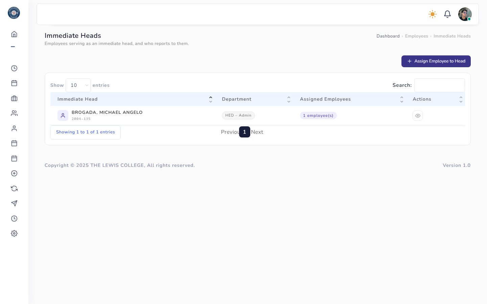
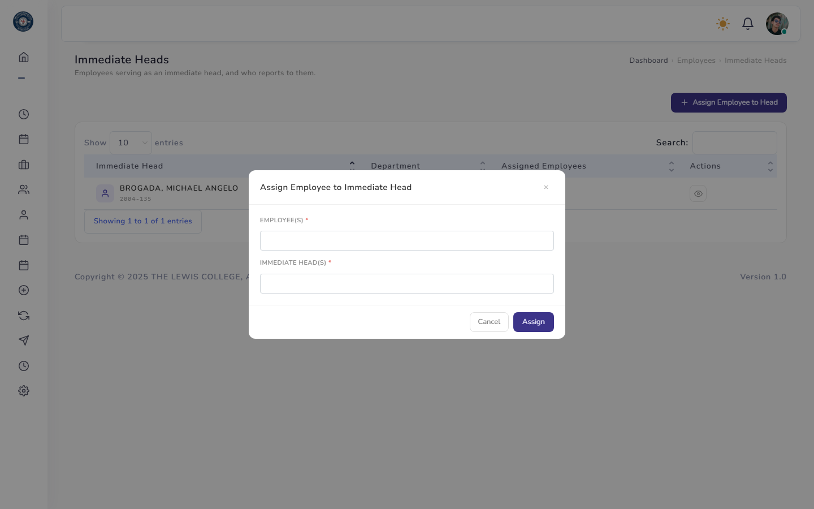
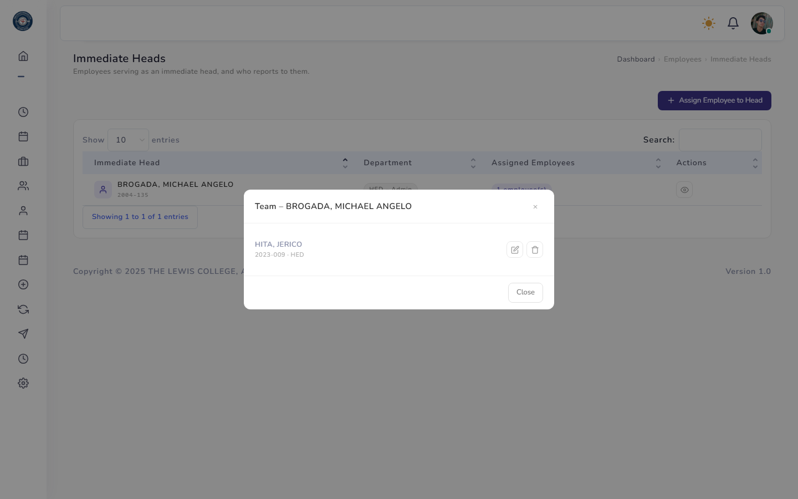
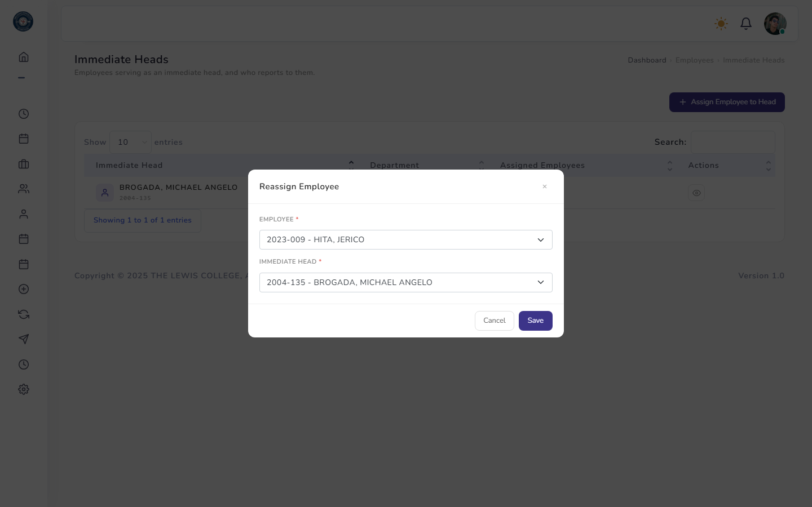
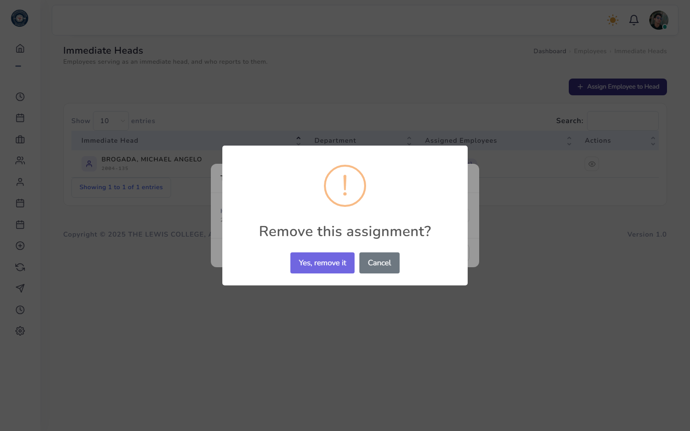

Immediate Heads
Assigns which employees serve as an immediate head, and who reports to them. This assignment drives the approval workflow — an employee's Leave/Overtime/CTO/OBT requests are routed to their immediate head before HR.

One row per employee who serves as a head, showing their department and a count badge of how many employees currently report to them. The Actions column opens the team roster.

Both fields are multi-select — assign several employees to several heads in one submission, creating every employee-to-head pairing at once.

Lists everyone currently assigned to that head, with per-row Reassign and Remove icon actions.

Changes a single existing assignment's employee and/or head — opened from the Reassign icon inside View Team.

Removing an assignment asks for confirmation first; it only unlinks that employee from that head and does not delete either employee record.
Rules & Validation
- Employee(s) and Immediate Head(s) — both required; every selected person must be an existing employee record.
- An employee cannot be their own immediate head — self-assignments are rejected (skipped in bulk Assign, blocked outright in Reassign).
- Duplicate assignments are prevented — assigning the same employee to the same head twice is skipped rather than creating a second row.
- An employee can have zero, one, or multiple immediate heads at the same time; assigning to multiple employees and multiple heads in one Assign submission creates every combination.
- All actions on this page require the Update Employee Info permission.
Frequently Asked Questions
Common questions about Immediate Heads.
If that employee had no immediate head before, any of their pending requests that only needed HR approval are automatically switched to require the new head's approval first. This keeps every request in line with the current org chart even if it was filed before the head was assigned.
Yes — an employee can be assigned to multiple heads at the same time. Each head sees that employee in their team and each can independently act as an approver.
Assign silently skips pairings where the "employee" and "head" are the same person, and pairings that already exist, then reports how many were skipped. If every pairing you submitted falls into one of those cases, the whole request is rejected with a message explaining why.
No — Remove only deletes the head-employee link. Both employee records remain untouched and can be reassigned at any time.